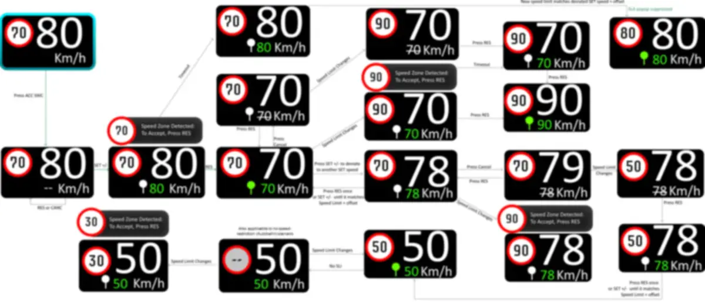

ADAS HMI · Stellantis · In development
Intelligent Cruise Control
Speed limit adjustment for Intelligent Cruise Control. The brief matched a competitor's Auto mode, which had no way to reject a new limit. I designed one: in Auto mode, RES returns to the previous set speed.
Skim shows the visuals and key numbers. Full story adds the reasoning behind each step.
of a GSR test route can show the wrong limit, and a system still passes.
colleagues voted at our global UX design review. A clear majority chose control.
ease of following and ignoring limit changes, out of 7: my popup design against the minimal one.
OutcomeManual mode by default. In Auto mode, one press on RES returns to the previous set speed. Spec released, in development.
- 1The questionWhat happens when the limit is wrong?
- 2The problemA 15 mph drop on the team’s commute
- 3AlignmentPrioritization, review, logic and flow
- 4ValidateSimulator study, then DCAS
- 5What's nextNo popups on the next architecture
The question
“What happens when the limit is wrong?”
- Manual and Auto modes
- Use the existing ACC HMI
- Use the existing steering wheel switches
- Fit the current cluster framework
The brief asked for what a competitor ships. As the Traffic Sign Assist feature lead, I asked this in the first review.
Traffic Sign Assist reads the limit this feature acts on. I had worked through how it's built with performance engineers, functional integrators, electrical engineering, homologation experts, functional safety experts and suppliers. Not everyone on the program had.
What I heard, paraphrased
“None of the competitors do it.”
“We already do this on another vehicle. Why change now?”
“Let's not be the only ones on an island.”
Context and constraints
Competitors ship an Auto mode, and regulation is putting speed assistance in every new car.
Drivers already using our Adaptive Cruise, and drivers who have never tried it.
No new steering wheel button. No major cluster framework tear-up.
The existing ACC HMI and switches. Cluster space is shared with dozens of features.
GuardrailExisting Stellantis ACC drivers should not be annoyed by anything new.
The data
How often the detected limit is wrong
Traffic Sign Assist fuses the front camera with map data to find the limit. GSR type approval allows 10% of the distance to be wrong, and cars tested on real roads land in the same range.
The driver sees a wrong number and can ignore it.
The car brakes or accelerates to the wrong number.
GSR: Regulation (EU) 2021/1958, at least 90% of the distance correct and 80% per road type. Cars: Thatcham Research, three cars over 4,500 miles.
Misread signs
A route number read as a speed limit, and the car speeds up.
Another road's sign
A service road or exit ramp limit applied to the freeway.
Old map data
A construction limit that stays years after the work ended.
Conditional limits
School hours, weather or vehicle type. Often ignored.
Real traffic
Everyone drives the flow of traffic, not the posted number.
Competitor benchmark and owner feedback
I drove competitor vehicles in Detroit and documented when the set speed changes, what the cluster shows, and how the driver can reject it. Most offered only automatic speed adjustment. None told the driver how to accept or reject a new limit. One of our own brands followed the same approach.
The speed changes with little or no explanation.
A small cue at most. The driver works out why it changed.
Lets drivers confirm a limit by hand, with a graphical cue only.
A small cue and no rejection message. The source of “we already do this”.
Extremely negative
J.D. Power verbatims · social listening · owner forums · video comments
"I'm in the switched off camp, after a few exhilarating decelerations on I-495."
Owner forum"After a couple of times using it I quit because it slowed to 55 on a 65 mph highway. The drivers behind me weren't happy."
Owner forum, F-150 Lightning"I don't like when it automatically switches to the speed limit, seemingly without notice."
J.D. Power verbatim, 2025 model year"Most people disable the feature as it can go crazy by misreading signs."
Owner forum"Speed limiters will create potentially dangerous situations when they return an incorrect limit."
Forbes, 2023"I use it on my truck all the time. There's a few times that it will read signs wrong, but I can catch those well enough and adjust them."
Even fans keep a thumb ready.I used this feedback to build the journey map in the next section.
The problem
A 15 mph limit drop on the team’s commute
On a Detroit freeway most of the team drives to the office, the posted limit drops by 15 mph and traffic keeps its speed.
The program team wanted to match competitors and keep the feature simple. Competitors had already shipped that approach, so I used their owner feedback and this scenario to show what it costs.
Journey map: Auto mode on the commute
The turning point
Most of the team drives this stretch, so the scenario needed no explanation. The map data is correct here, and Auto mode still brakes against traffic.
In Auto mode, the car adopts every limit it detects. It brakes to 55 while traffic stays at 70, and the drivers behind brake too.
Undo an unwanted speed change in one move, with the controls drivers already know. Press RES, and it's back at 70 with traffic.
How might we let drivers return to their previous speed without new hardware, a cluster redesign, or annoying existing ACC drivers?
Alignment
Getting a rejection HMI into scope
The functional team rated a rejection HMI not feasible. I kept it inside the existing hardware and popup framework, then took it to the global UX design review.
Prioritization grid: driver value vs effort
I placed each option by its value to drivers and its effort on the current architecture. The chosen option needs no new hardware and no framework change.
Quick winsHigh value, low effort
Big betsHigh value, high effort
Low valueLow effort
AvoidLow value, high effort
Global UX design review
I presented the journey map, the owner feedback and the Detroit scenario.
Journey map and owner feedback
Built from J.D. Power verbatims and social listening, plus the Detroit scenario.
60 colleagues voted
Two journeys: with a way to reject a wrong limit, and without. A clear majority chose the first.
The UX director backed it
The global UX director supported going beyond competitors, and the program added the Auto mode recall to scope.
HMI logic and flow
My deliverable: every state, button press and timeout, drawn with cluster graphics for engineering and UI design.
Auto mode: RES returns to the previous set speed
The set speed changes to the new limit and a message shows for five seconds. RES within that time returns to the previous set speed. After it, RES works as in Adaptive Cruise.
No press within five seconds, and the car stays at 50.
If the new limit matches the driver's set speed, there's no message.
A cancelled set speed updates quietly. With no sign, the set speed stays.
Manual mode: RES accepts the new limit
The factory default. A new limit is a proposal: RES accepts it, and no press keeps the set speed.
Rejection HMI: popup or minimal cue
Rejection was in scope. How to show it was open, so I prototyped both.
- A message on every limit change: what changed and which button undoes it
- A telltale next to the set speed shows the feature state
- All controls on the steering wheel
- A small green arrow next to the set speed. No message
- Reject a change with SET + or SET −
- Already in production on another vehicle
A way to reject a wrong limit
I chose the evidence, the scenario and the forum: owner feedback, the Detroit commute, and the global UX design review.
Popup or minimal cue
I requested a simulator study with our own brand's design as Concept B. Concept A went into the spec because it fits the existing popup framework.
Validate
Simulator study: popup vs minimal cue
Part of a feature validation study that covered discovery, engagement and usage. This section covers one task: following and ignoring limit changes.
Concept A was my popup design. Concept B was the minimal HMI one of our own brands ships. The UX research team built both from my prototypes, and each participant drove both in a balanced order.
Ease of following and ignoring limit changes
Average rating out of 7, 29 participants.
failed to ignore a speed change with Concept B.
never noticed Concept B's green triangle.
said, unprompted, that A's messages helped them understand.
Concept A: what worked
- 10 of 29 said the messages helped them understand the system
- “It's nice, big, bold and placed at the center.” (Participant 29)
Concept A: what to improve
- 7 of 29 said the message disappeared before they could read it
- Once drivers know RES rejects a change, they may stop reading the message
- 7 of 29 liked Concept B's minimal layout with no popups
Released before the study results
The study ran after this release was finalized, too late for framework changes. The released design is the popup design tested as Concept A.

Released logic and flow, Manual mode. Blurred on purpose.
Product leaned toward Auto only, like competitors. Owner feedback on competitors was extremely negative.
Manual is the factory default. Drivers accept each new limit, or keep their speed.
Some drivers do want the car to adapt by itself.
Auto is a choice. RES within five seconds returns to the previous set speed.
No competitor told drivers how to accept a limit or go back.
A message on each change. It says what changed and which button undoes it.
DCAS (UN R171): driver confirmation and rejection
The driver may confirm or reject any change in the maximum speed, and a speed change caused by a new limit must stay under the driver's control.
DCAS, UN Regulation No. 171, paraphrased
None of the competitors offered this when I proposed it.
I proposed it before DCAS was published, based on owner feedback and my work with homologation experts on rules like GSR. DCAS also requires the detected limit to be shown at all times, which the design does.
What's next
Next architecture: no popups
Drivers valued the message, but not a popup on every change. The next architecture moves the guidance next to the set speed and keeps the popup area free.
After a global UX alignment on the study report, I specified this for the next architecture. It needs a new cluster framework, so it couldn't go into the current release. I've pushed it into upcoming releases.
Redrawn on a Jeep Wagoneer cluster layout. Direction, not final copy.
Demo: Auto mode
A school zone with an officer on the shoulder. With Adaptive Cruise, the car holds 70 and gets pulled over. In Auto mode, it follows the new limit, and RES returns to 70.
Learnings
A local scenario made it concrete
Competitor complaints set the context. A road the team drives every day turned them into our problem.
Push on the need, test the solution
I pushed for a way to reject. For how to show it, I ran a study that included our own brand's design.
Competitor owners had already tested it
Their feedback described the failure before we built anything, so I started from it instead of assumptions.
Imperfect data needs an override
With detection right about 9 times in 10, Auto mode needs a one-press way back.